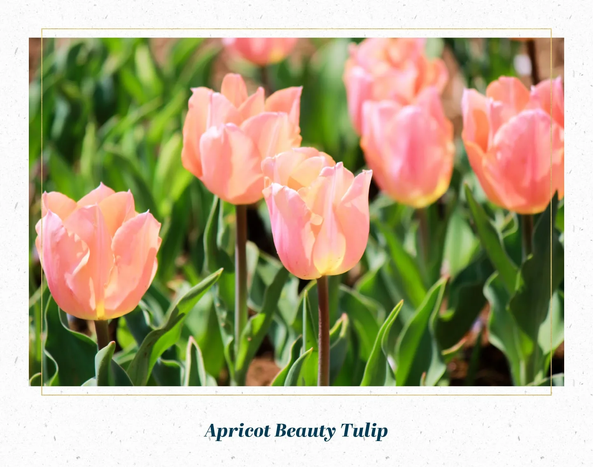
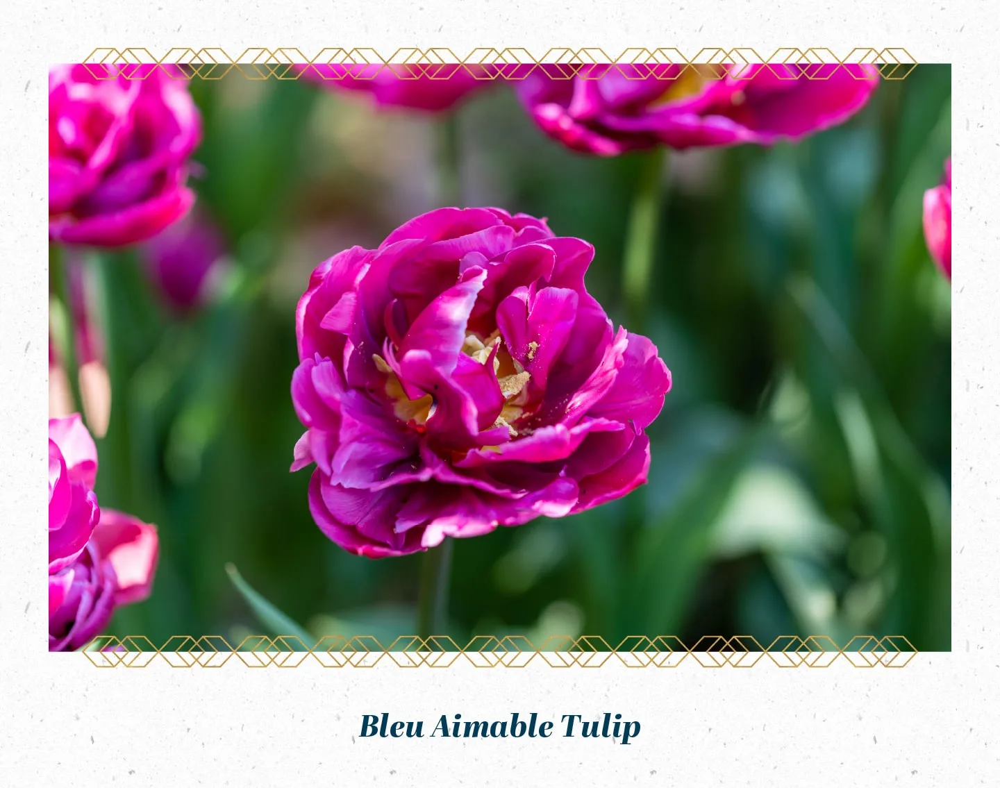
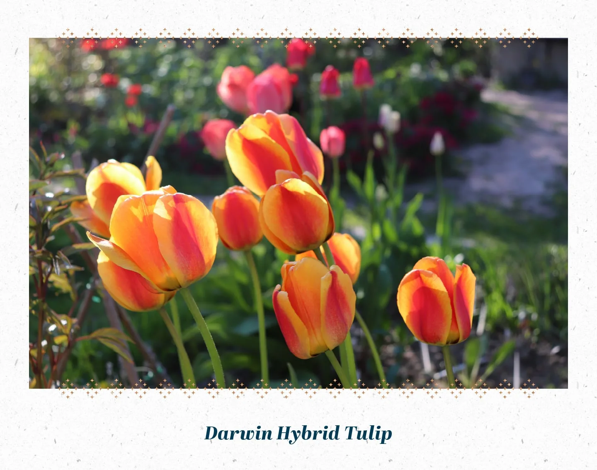
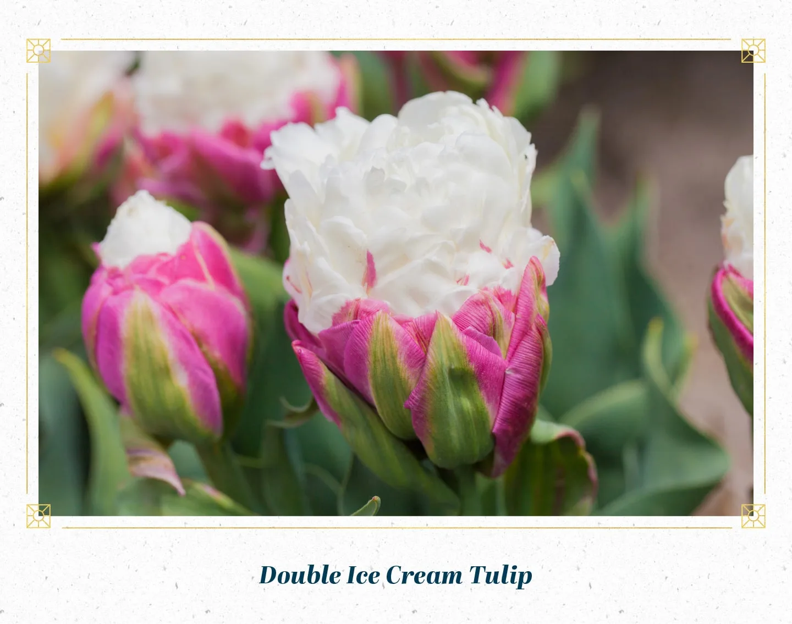

These stunning, pink-orange tulips are truly a perfect representation of their name. Apricot beauties are one of the most popular varieties of tulip, adding a vivid pop of color to any garden. These lightly scented blooms are relatively easy to grow and typically bloom in late April or early May. Depending on your variety, these guys can reach up to 24 inches!
You might be surprised to hear that this heirloom variety dates all the way back to 1910. Its pretty blue color makes it unique compared to other tulips and is a great addition to any floral arrangement. They bloom in late spring and can grow up to 22 inches tall. These blue flowers prefer full sun but can tolerate shaded areas, especially in hot climates.
A cross between fosteriana and late-blooming single tulips, this hybrid is best known for its sturdy, tall stems and large blooms. If you don’t cut the leaves off after blooming, this variety will give a beautiful repeat performance year after year. Due to their long stems, pyramid shape and spectacular colors (primarily in the reddish-orange to red range), Darwin hybrid tulips are often considered the best tulip variety for cut bouquets. These pretty red blooms can grow to be quite tall under the proper conditions.
yes, these late spring blooms look just as delicious as they sound! You’ll notice these flowers look like a scoop of vanilla ice cream with their unique white petals, however, these blooms are definitely not edible. Double ice cream tulips can grow between 10-16 inches tall and require full sun with partial shade for optimal growth.
